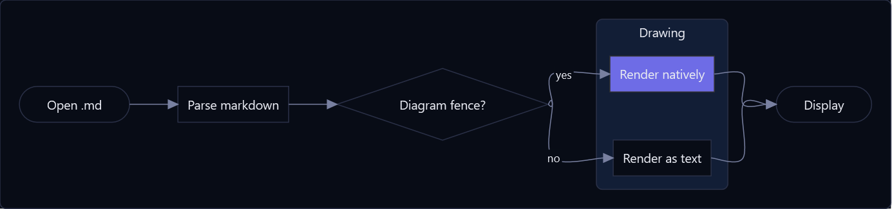
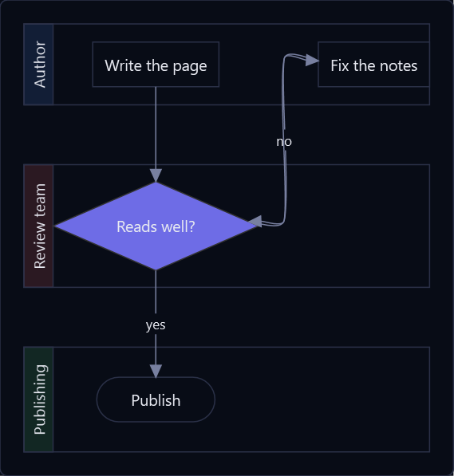
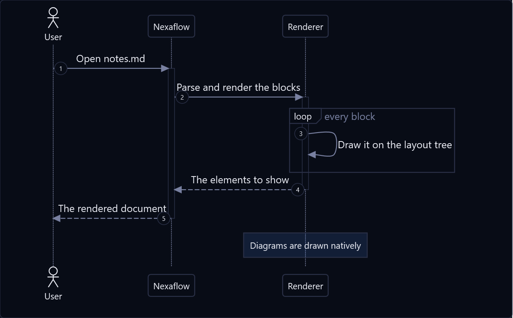
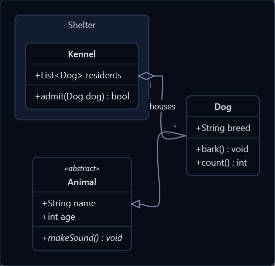
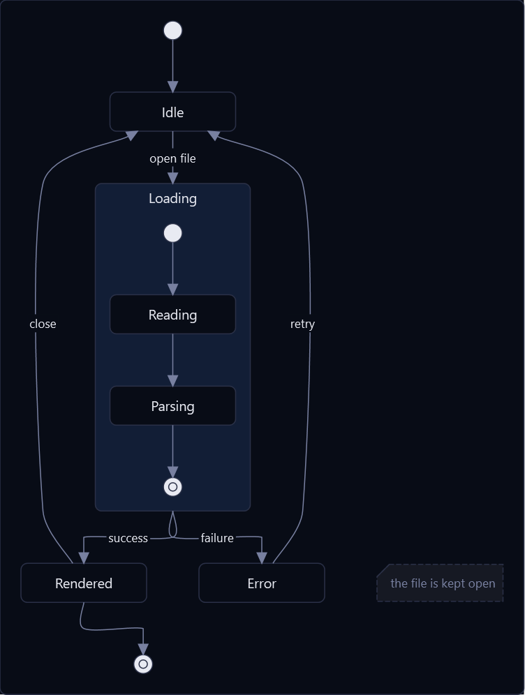
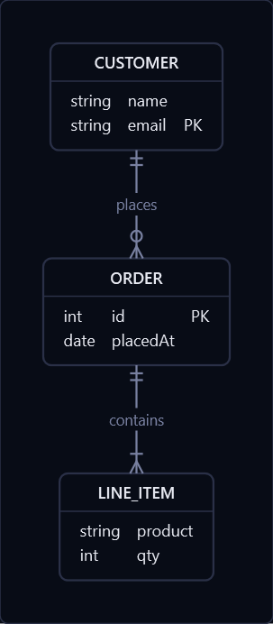
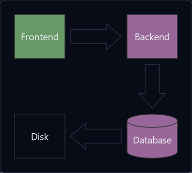
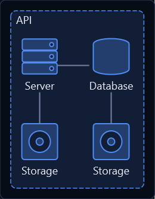
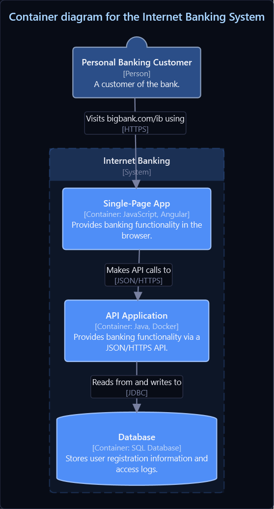
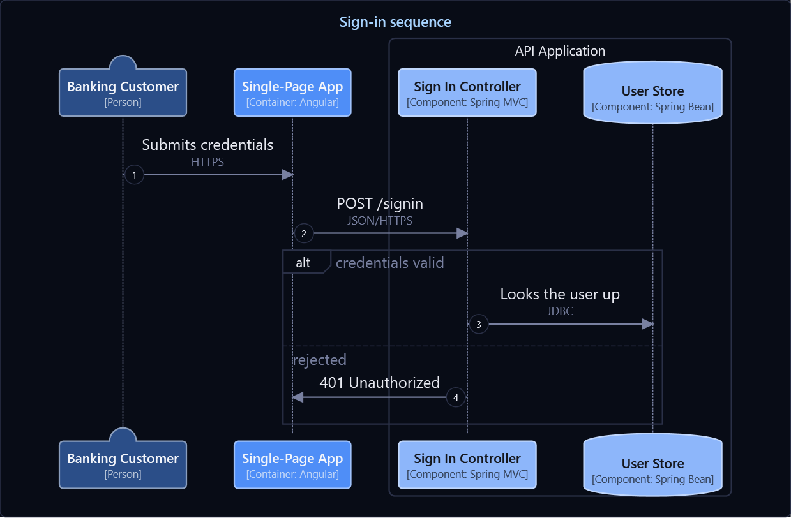

Flowchart
Boxes, decisions and flows in any direction, with shaped nodes, labelled edges, subgraphs that gather them and classes that colour them.
```mermaid
flowchart LR
Start([Open .md]) --> Parse[Parse markdown]
Parse --> Q{Diagram fence?}
subgraph Drawing
Q -- yes --> Native[Render natively]
Q -- no --> Text[Render as text]
end
Native --> Done([Display])
Text --> Done
classDef chosen fill:#6e6ce6,stroke:#333
class Native chosen
```

Swimlane diagram
A flowchart divided by who owns each step. Every subgraph written outside them all is a lane — a band of its own, named at the
near end of it, that the work in it runs through — and an arrow from one lane to another is a handoff.
```mermaid
swimlane-beta LR
subgraph Author
write[Write the page]
fix[Fix the notes]
end
subgraph Review team
read{Reads well?}
end
subgraph Publishing
ship([Publish])
end
write --> read
read -->|yes| ship
read -->|no| fix
fix --> read
classDef waiting fill:#6e6ce6,stroke:#333
class read waiting
```

Sequence diagram
Participants and the messages between them: notes, numbering, the bar saying one is working, and the frames — alt,
opt, loop, par, critical, break — that hold a run of messages under a condition.
```mermaid
sequenceDiagram
autonumber
actor U as User
participant N as Nexaflow
participant R as Renderer
U->>+N: Open notes.md
N->>+R: Parse and render the blocks
loop every block
R->>R: Draw it on the layout tree
end
R-->>-N: The elements to show
N-->>-U: The rendered document
Note over R: Diagrams are drawn natively
```

Class diagram
UML classes with attribute and method compartments, the full relationship set, namespaces, annotations and how many of each class the other has.
```mermaid
classDiagram
direction LR
class Animal {
<<abstract>>
+String name
+int age
+makeSound()* void
}
class Dog {
+String breed
+bark() void
+count()$ int
}
namespace Shelter {
class Kennel {
+List~Dog~ residents
+admit(Dog dog) bool
}
}
Animal <|-- Dog
Kennel "1" o-- "*" Dog : houses
```

State diagram
States, the transitions between them, the dots a scope starts and stops at, composite states and notes.
```mermaid
stateDiagram-v2
[*] --> Idle
Idle --> Loading : open file
state Loading {
[*] --> Reading
Reading --> Parsing
Parsing --> [*]
}
Loading --> Rendered : success
Loading --> Error : failure
note right of Error : the file is kept open
Rendered --> Idle : close
Error --> Idle : retry
Rendered --> [*]
```

Entity-relationship diagram
Entities with typed attributes and keys, joined by crow's-foot cardinality. Identifying relationships use solid lines, non-identifying use dashed.
```mermaid
erDiagram
CUSTOMER ||--o{ ORDER : places
CUSTOMER {
string name
string email PK
}
ORDER ||--|{ LINE_ITEM : contains
ORDER {
int id PK
date placedAt
}
LINE_ITEM {
string product
int qty
}
```

Block diagram
Blocks on a grid you place yourself: columns, spans, spaces, nested blocks, fat block arrows and edges by id.
```mermaid
block-beta
columns 3
Frontend blockArrowId6<[" "]>(right) Backend
space:2 down<[" "]>(down)
Disk left<[" "]>(left) Database[("Database")]
classDef front fill:#696,stroke:#333;
classDef back fill:#969,stroke:#333;
class Frontend front
class Backend,Database back
```

Architecture diagram
Services laid out by the sides their edges leave by: groups box what is put in them, and a junction is where several edges meet.
```mermaid
architecture-beta
group api(cloud)[API]
service db(database)[Database] in api
service disk1(disk)[Storage] in api
service disk2(disk)[Storage] in api
service server(server)[Server] in api
db:L -- R:server
disk1:T -- B:server
disk2:T -- B:db
```

C4 diagrams
Software architecture at C4's zoom levels — context, containers, components — plus deployment and dynamic views. Elements are cards carrying their kind, technology and description, graded so the deeper the colour the higher the abstraction; boundaries nest and hold what is written inside them; relationships name the protocol they run over. A card's label and a boundary's name are typed into where they are drawn.
```mermaid
C4Container
title Container diagram for the Internet Banking System
Person(customer, "Personal Banking Customer", "A customer of the bank.")
System_Boundary(c1, "Internet Banking", "System") {
Container(spa, "Single-Page App", "JavaScript, Angular", "Provides banking functionality in the browser.")
Container(api, "API Application", "Java, Docker", "Provides banking functionality via a JSON/HTTPS API.")
ContainerDb(db, "Database", "SQL Database", "Stores user registration information and access logs.")
}
Rel(customer, spa, "Visits bigbank.com/ib using", "HTTPS")
Rel(spa, api, "Makes API calls to", "JSON/HTTPS")
Rel(api, db, "Reads from and writes to", "JDBC")
```

The body accepts the fuller C4-PlantUML macro vocabulary — $tags
with AddElementTag, UpdateElementStyle, SHOW_LEGEND, Deployment_Node nesting, RelIndex numbering,
LAYOUT_LEFT_RIGHT — not just Mermaid's subset. C4Dynamic numbers its relationships without being asked.
C4 sequence
C4Sequence has no Mermaid equivalent — it mirrors C4-PlantUML's C4_Sequence. It is read into the same thing a
sequenceDiagram is read into and drawn by the same builder, so an element is a lifeline whose box is a card saying what
it is, a Boundary groups them, a Rel carries what it is done with — and alt, loop, note over and activate
work among the macros because they are the native grammar itself.
```mermaid
C4Sequence
title Sign-in sequence
SHOW_INDEX()
Person(customer, "Banking Customer")
Container(spa, "Single-Page App", "Angular")
Boundary(b, "API Application", "Container")
Component(signin, "Sign In Controller", "Spring MVC")
ComponentDb(users, "User Store", "Spring Bean")
Boundary_End()
Rel(customer, spa, "Submits credentials", "HTTPS")
Rel(spa, signin, "POST /signin", "JSON/HTTPS")
alt credentials valid
Rel(signin, users, "Looks the user up", "JDBC")
else rejected
Rel_Back(spa, signin, "401 Unauthorized")
end
```
